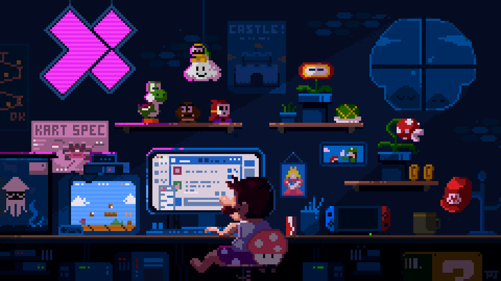
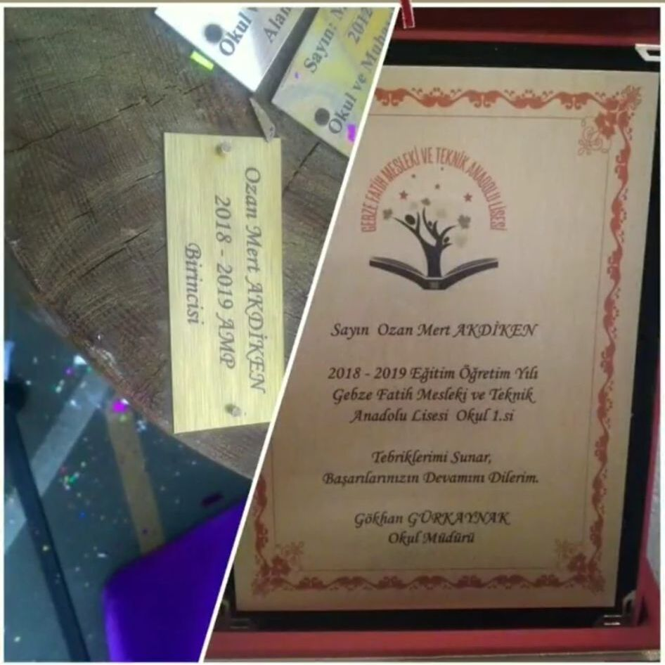

Full Stack Developer
Ozan Mert Akdiken
I'm |
I build user-friendly interfaces, Node.js based backend systems and projects that run across different platforms.
About
Building practical software with a strong product mindset.
I strengthened my interest in software during high school through an Information Technologies - Web Design program and graduated as the top-ranked student in both my school and my field. During that period, I took active roles in TUBITAK projects and gained hands-on experience as an IT intern at Eczacibasi E-Kart Electronic Card Systems.
While preparing for university, I worked on freelance projects across different fields and improved my skills in data collection, analysis and software development. I continue to build with React, TypeScript, Node.js and React Native.
Problem solving and analytical thinking are at the center of how I work. I enjoy approaching challenges from different angles and turning ideas into practical, polished products.

Skills
Modern web, backend and application development skills.
Projects
Selected projects built across different fields since 2017.
Certificates